分歧最早出现
在哪一步？
原策略，三场景，两种输入条件，两轮独立服务器。全部12条闭环与每步记录，不进行表征干预或挑选成功案例。
6/6对先出现观测差异，再出现动作差异
12/12条轨迹完成；来源、初始请求、逐步计数及数值哈希检查通过。共1869次请求。更新于2026-09-21 23:10:31 CDT。
固定方案与范围
场景400000、400001、400002，均来自已有清单前三项，独立于成功结果选择。每轮依次干净、主相机噪声σ=.20，各3条。轮间重新加载原模型，场景间使用原客户端reset，保持十选一指令随机数消耗、seed42、BF16、10次去噪、关闭编译、原缓存与完整32步动作缓冲。
记录器不改传入值或返回对象，9项CPU检查验证实际接口与上游循环，包括400步限制。每步保存三相机哈希、EEF向量和关节驱动目标、完整请求、20维服务器动作及传给take_action的16维目标；后者是命令，不是测量的物理轨迹。原joint_action.vector记录关节驱动目标，而非实测关节位置；EEF中的夹爪分量也是命令值，不能用作接触标签。此语义澄清来自固定版本源码，实验与记录均未改动。只用空闲GPU2，遵守原90分钟总预算，未终止其他任务。
两轮的12个初始完整请求均匹配此前保存输入；其中12/12个首动作与固定请求诊断完全一致。首动作匹配不是整条轨迹匹配的替代证据。
全部六对轨迹
| 条件 / 场景 | 两轮动作数 | 两轮结果 | 原图首差 | EEF首差 | 驱动目标首差 | 请求首差 | 20D动作首差 | 16D目标首差 |
|---|---|---|---|---|---|---|---|---|
| 干净 / 400000 | 112 / 112 | 成功 / 成功 | 1 | 1 | 23 | 1 | 32 | 32 |
| 干净 / 400001 | 105 / 105 | 成功 / 成功 | 1 | 1 | 6 | 1 | 32 | 32 |
| 干净 / 400002 | 105 / 106 | 成功 / 成功 | 1 | 1 | 4 | 1 | 32 | 32 |
| 噪声 / 400000 | 110 / 110 | 成功 / 成功 | 1 | 1 | 2 | 1 | 32 | 32 |
| 噪声 / 400001 | 400 / 400 | 失败 / 失败 | 1 | 1 | 4 | 1 | 32 | 32 |
| 噪声 / 400002 | 102 / 102 | 成功 / 成功 | 1 | 1 | 8 | 1 | 32 | 32 |
索引从0开始。未出现表示共享前缀内没有差异；长度不同仍判为整轨迹不一致。数值采用保存dtype逐字节比较，不能把极小数值差异直接当作控制失败。
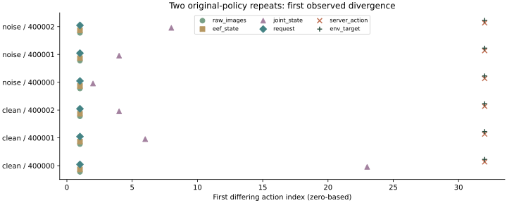
第一处差异的大小
| 条件 / 场景 | 首差索引 | EEF位置最大差（微米） | 策略主图变化像素比例 | 主图最大通道差（0–255） |
|---|---|---|---|---|
| clean / 400000 | 1 | 0.119 | 19.0% | 18 |
| clean / 400001 | 1 | 0.179 | 24.5% | 29 |
| clean / 400002 | 1 | 0.358 | 26.0% | 23 |
| noise / 400000 | 1 | 0.656 | 15.5% | 32 |
| noise / 400001 | 1 | 0.119 | 14.5% | 23 |
| noise / 400002 | 1 | 0.089 | 15.0% | 16 |
EEF位置差只比较xyz；夹爪命令与旋转参数不混入长度单位。变化像素比例表示任一RGB通道不同，不代表语义信息受损。
若观测先于动作改变，它支持先排查执行与观测路径；若相同请求下动作先变，仍需核对32步缓冲和生成上下文。仅凭顺序不能认定具体模块有缺陷。
第一处分歧的请求
逐对保留每个首次变化索引的两轮完整请求；完全相同的对展示初始输入。完整逐步请求压缩包留在本地（503.5MiB）；轻量逐步数值与哈希全部公开。
干净 / 400000 · step 1 · 两轮请求

干净 / 400000 · step 23 · 两轮请求
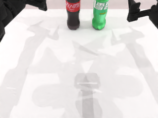
干净 / 400000 · step 32 · 两轮请求
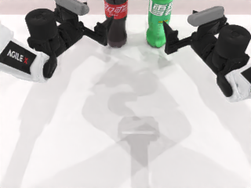
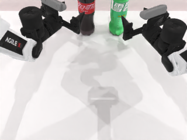
干净 / 400001 · step 1 · 两轮请求
干净 / 400001 · step 6 · 两轮请求
干净 / 400001 · step 32 · 两轮请求
干净 / 400002 · step 1 · 两轮请求
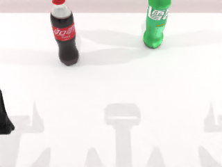
干净 / 400002 · step 4 · 两轮请求
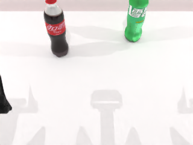
干净 / 400002 · step 32 · 两轮请求
噪声 / 400000 · step 1 · 两轮请求
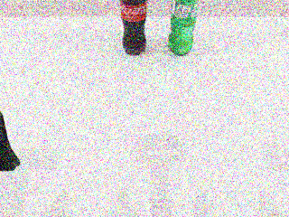
噪声 / 400000 · step 2 · 两轮请求
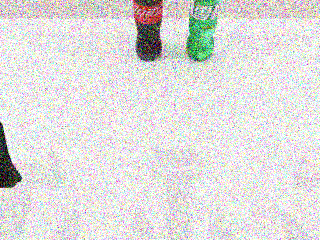
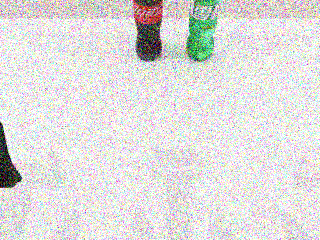
噪声 / 400000 · step 32 · 两轮请求
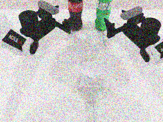
噪声 / 400001 · step 1 · 两轮请求
噪声 / 400001 · step 4 · 两轮请求
噪声 / 400001 · step 32 · 两轮请求
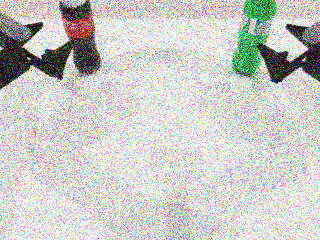
噪声 / 400002 · step 1 · 两轮请求
噪声 / 400002 · step 8 · 两轮请求
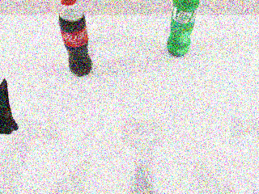
噪声 / 400002 · step 32 · 两轮请求
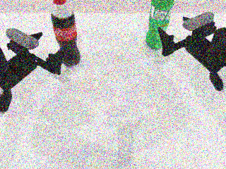
全部12条轨迹视频
解释与下一步
这是一项重复性诊断，使用三个已见场景和两次重复，不能估计泛化成功率，不能证明RAE优于VAE，也不能验证接触阶段鲁棒性。下一步准备仅重放前两条固定命令的小诊断，分别记录规划器返回路径和实测关节状态，区分规划与物理执行。方案尚未启动，需另行固定预算并通过记录器检查；当前不追加适配器训练或参数搜索。
表征改动能够改变动作已有证据，但“改变动作”与“提高控制成功率”是两个问题。先建立可信的对照评测，再用独立新场景验证小改进。
可复现材料
protocol.md · source-freeze.json · launch.json · cpu-checks.json · summary.json · supplemental-audit.json · first-divergence-inspection.json · measurement-semantics.md · next-diagnostic-draft.md · exit-code.txt